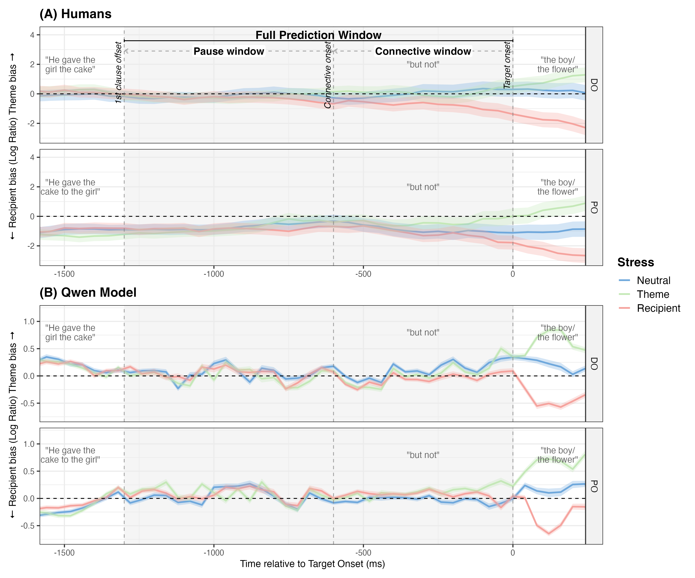
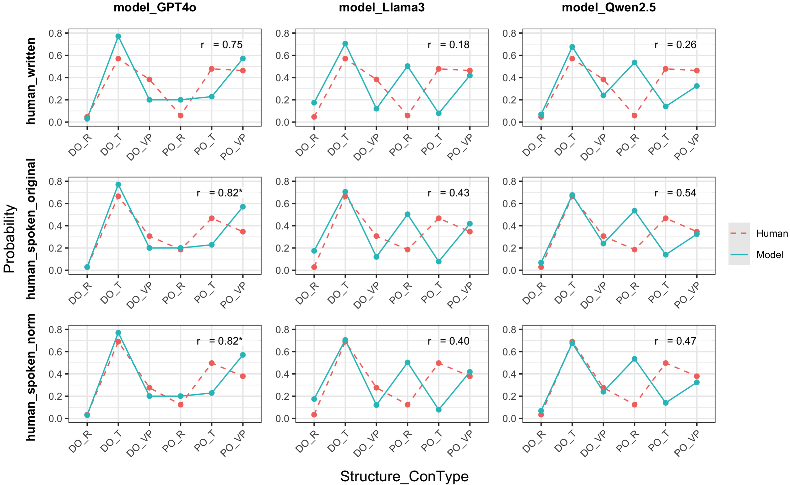
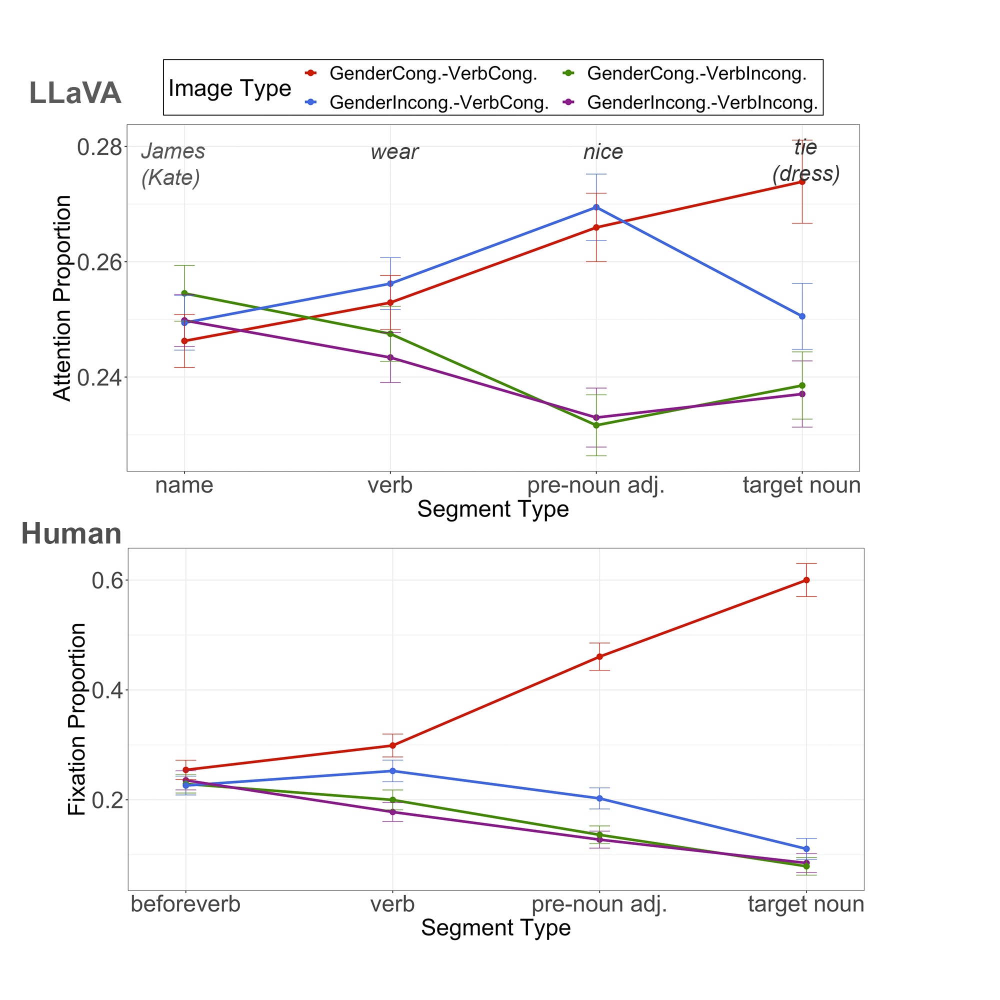

Using the visual world paradigm with spoken Mandarin and visual displays, we show that humans and Qwen-2.5-Omni produce similar prediction outputs but differ in processing dynamics — a 650ms delay in structural sensitivity and anomalous cue integration in the model reveal algorithmic-level divergence beneath computational-level convergence.
Paper (under review) →
Mandarin dative structures (DO/PO) modulate contrastive focus predictions differently in humans and LLMs. Both show the same direction of structural effects, but models amplify them 3× relative to humans — and correlate more with spoken than written human data. 🏆 Best Paper Nomination.
CMCL 2025 @ NAACL →
LLaVA 1.5 shows verb-based anticipatory attention in visual scenes — paralleling human VWP patterns — but fails at gender-based prediction. Layer-wise analysis reveals middle transformer layers are most responsible for verb-driven predictive behavior.
CoNLL 2024 →